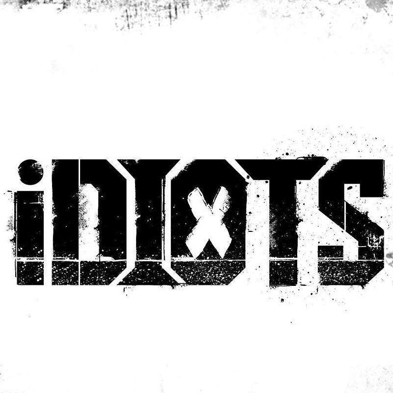

Raymond was an eminent Burmese rock singer, songwriter and former lead vocalist of
the boy band Idiots. He was well known as a vocal critic of Myanmar's ruling military junta, and his
involvement in anti-coup protests led to an arrest warrant being issued for him.
Early Life & Childhood
Born into a musical family on 26 November 1988 in Yangon, Raymond was a son of Saw Khu Hser, a songwriter, and Khin Myat Mon,
a singer and vocal trainer. His parents divorced when he was one years old. His mother remarried and had a daughter named Lapyae Gabyar,
who is also a singer. He went to Basic Education High School No. 1 Dagon.
Raymond and his family
Career
Raymond started his music career in 2002, singing in harmony. In 2005, he co-founded Idiots, a rock band, together with Aung Ye, Phoe Lone and Kyaw Khine, and the band released several songs and mix-tapes.
Under the name of SIR Rock House, Idiots collaborated with other rock bands to release albums and performed music concerts at various locations throughout the region.
In 2011, Idiots released their first album Lu Ah Gita. It was followed by a second album Khit Thit Kyaut which was released nationwide in July 2016. The album achieved considerable success and established him as a popular singer in the Burmese music scene. The album became one of the best-selling albums in the Myanmar Music Store and listed on the top ten in the three local radio channels. It also hit second in Top Ten Best Selling Albums of all City Marts in Yangon.
On 16 December 2017, Raymond performed a major duo concert "Reason To Be Idiots," alongside Aung La from Reason band, at Hmyawzinkyun.

Famous Songs
Raymond composed and sang many famous songs. His songs are well-liked by young generations.